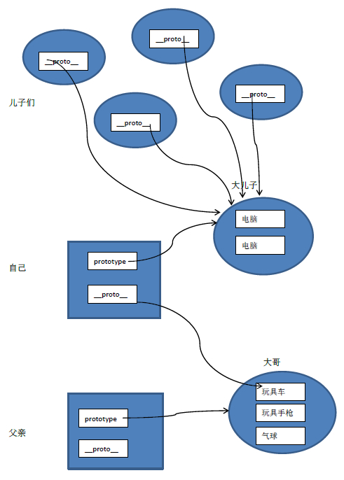

原型链
- 对象:(为了扩展属性和方法而生)
- 原型:每一个对象的基类
- 自己的理解:prototype相对于其他普通对象直接扩展的区别：全局修改，子类全部可继承
1：理解对象:为了扩展属性和方法
//js代码:
//在js中只要是对象就可以动态增加属性和方法
var boxDom = document.getElementById("box");
boxDom.name = "keke";
console.log(boxDom.name);//运行结果:keke
2:理解:prototype
最后打个比喻，虽然不是很确切，但可能对原型的理解有些帮助。

父亲（函数对象），先生了一个大儿子（prototype），也就是你大哥，父亲给你大哥买了好多的玩具，当你出生的时候，你们之间的亲情纽带（__proto__）会让你自然而然的拥有了你大哥的玩具。
同样，你也先生个大儿子，又给他买了好多的玩具，当你再生儿子的时候，你的小儿子会自然拥有你大儿子的所有玩具。至于他们会不会打架，这不是我们的事了。
所以说，你是从你大哥那继承的，印证了那句“长兄如父”啊！
有助于理解prototype的2篇文章
文章1
文章2
//案例:
//小球对象
function Ball(){//此处Ball相当于一个函数对象，命名一定大写
this.x = 0; //作为类的方法，必须用this，这样便于继承和扩展，如果是va x =0;是私有变量，如果是Ball.x=0是静态变量，均不能继承
this.y = 0;
this.radius = 10;
this.color = "red";
};
//Ball.prototype.继承Object.prototype
Ball.prototype.draw = function(){//推荐，必须这样写
//alert(this.x +"==="+ this.y);
}
//config改为false就不能迭代了
Ball.prototype = { //这种写法很危险，因为这样写，相当于prototype重新定义，里面的参数会消失
constuctor:Ball,
name = "keke"，
draw:function(){
alert();
}
};
var ball = new Ball();//对象创建的时候，他拥有一个prototype对象-->Ball.protptype
var ball2 = new Ball();
ball.x =100;
ball.draw();
ball2.x =10000;
ball2.draw();
alert(ball.constructor == Ball);